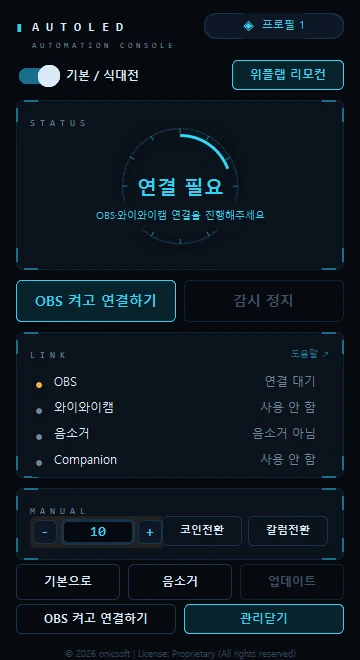
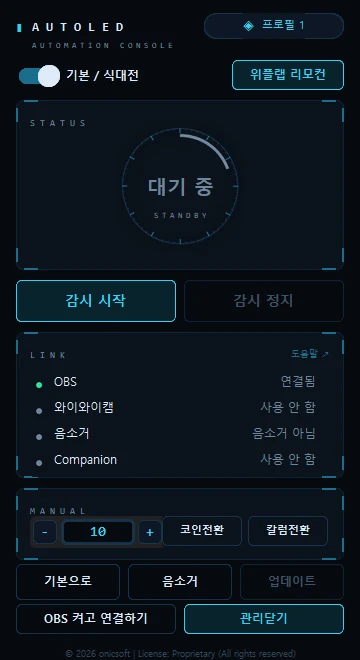
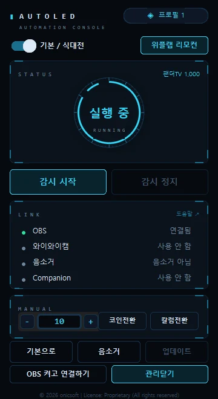
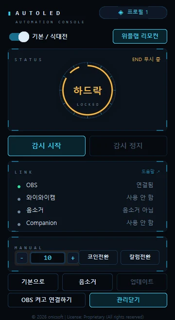

대표 제품 · 판매 · 운영 중01 / 11
AutoLed
후원 알림이 뜨는 순간 방송 연출을 자동으로 실행하고, 끝나면 원래 장면으로 돌려놓는 Windows 앱입니다. 혼자 기획하고 만들어 정식 판매하며, 업데이트와 운영까지 맡고 있습니다.

이야기
- 01문제
- 후원이 들어올 때마다 방송 중인 사람이 알림을 보고 장면을 바꾸고, 조명과 연출을 손으로 틀어야 했습니다. 방송을 하면서 동시에 하기에는 놓치는 순간이 많았습니다.
- 02만든 것
- 팬더TV, SOOP, 투네이션, 위플랩, 펀네이션 후원 알림을 감지해 후원 개수에 맞춘 OBS 장면 전환, Resolume LED 칼럼, 조명과 카메라, 배경음악 음소거를 실행합니다. 연출은 음원에 맞춰 놓는 시간축 편집기(Timeline)로 직접 짭니다.
- 03결과
- 버튼을 누르지 않아도 후원이 들어오는 순간 연출이 실행되고 스스로 원래 장면으로 돌아옵니다. 처음 설치한 사람도 준비 단계 화면만 따라 하면 방송을 시작할 수 있습니다.
영상으로 보기
AutoLed 홍보영상과, 제품을 만든 과정을 담은 유튜브 영상입니다.
상태를 눌러 보세요
기본창은 지금 무슨 일이 일어나는지 한눈에 보이게 다섯 가지 상태로 나눴습니다. 아래 버튼을 누르면 실제 화면이 바뀝니다.





처음 켠 사람을 위한 준비 단계
설명서를 읽지 않아도 되도록, 처음 켜면 할 일을 순서대로 보여 주고 끝난 단계는 지워 나갑니다.
Timeline 연출 편집기
음원 파형 위에 장면, 조명, 카메라, 소리 블록을 놓아 연출을 짭니다. 자동 연출 만들기로 초안을 한 번에 깔고 손으로 다듬습니다.
관리센터
방송에 필요한 설정을 한곳에 모았습니다. 화면은 모두 예시 데이터로 띄워 찍었습니다.
판매하고 운영하려고 한 일
- 앱 안에서 새 버전을 알리고 바로 업데이트합니다. 업데이트 정보에는 서명과 SHA-256 체크섬을 붙입니다.
- 계정과 이용 기간은 직접 만든 로그인 서버가 확인합니다.
- 소스를 기계어로 컴파일(Nuitka)하고 설치 파일(Inno Setup)로 배포합니다.
- 자동 테스트 2,051개를 통과시키고, 실제 OBS에서 한 번 더 확인한 뒤 내보냅니다.
공개 범위 · 소스 코드와 후원 감지 방식은 공개하지 않습니다. 공개 저장소에는 설치 파일만 둡니다. 화면은 예시 데이터로 띄워 찍었습니다.